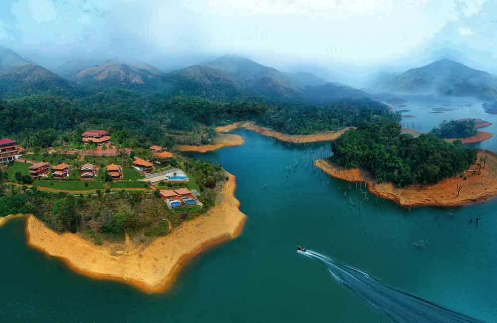
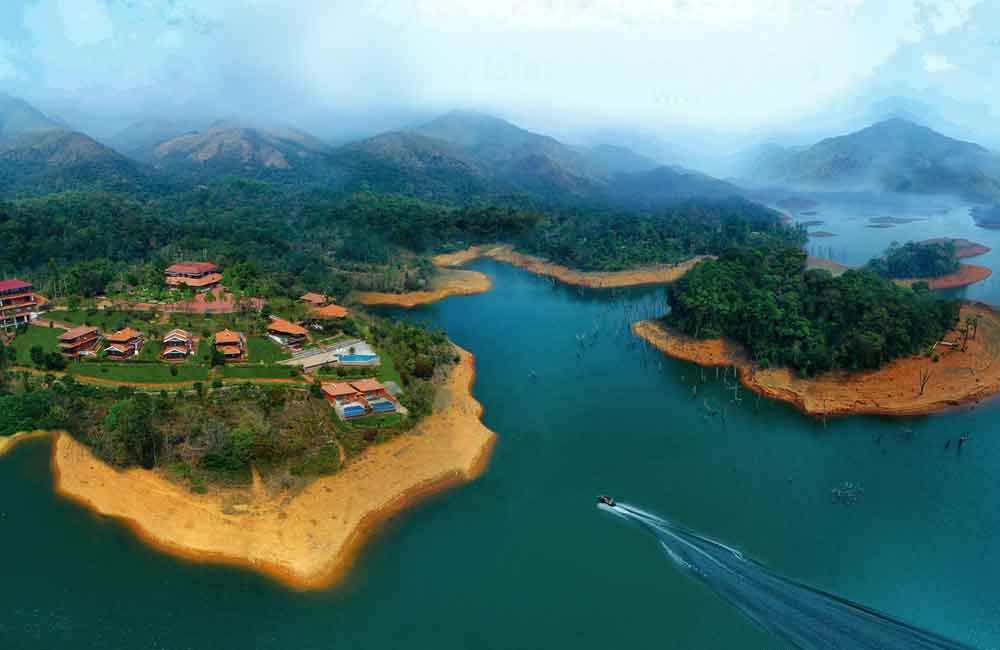

WAYANAD
Wayanad is a district in the north-east of the Indian state of Kerala, with
administrative headquarters at the municipality of Kalpetta. It is the only plateau in Kerala.The Wayanad
Plateau forms a continuation of the Mysore Plateau, the southern portion of Deccan Plateau which links the
Western Ghats with the Eastern Ghats. It is set high in the Western Ghats with altitudes ranging from 700 to
2100 meters.Vellari Mala, a 2,240 m (7,349 ft) high peak situated on the trijunction of Wayanad, Malappuram,
and Kozhikode districts, is the highest point in Wayanad district. The district was formed on 1 November 1980 as
the 12th district in Kerala, by carving out areas from Kozhikode and Kannur districts. An area of 885.92 km2 of
the district is forested.Wayanad has three municipal towns—Kalpetta, Mananthavady and Sulthan Bathery. There
are many indigenous tribes in this area.The Kabini River, a tributary of Kaveri River, originates at
Wayanad. Wayanad district, along with the Chaliyar valley in neighbouring Nilambur (Eastern Eranad region) in
Malappuram district, is known for natural gold fields,which are also seen in other parts of the Nilgiri
Biosphere Reserve. Chaliyar river, which is the fourth longest river of Kerala, originates on the Wayanad
plateau. The historically important Edakkal Caves are located in Wayanad district.
Wayanad district is bordered by Karnataka (Kodagu and Mysore districts) to the north and north-east, Tamil Nadu
(Nilgiris district) to the south-east, Malappuram to the south, Kozhikode to the south-west and Kannur to the
north-west.Pulpally in Wayanad boasts the only Lava-Kusha temple in Kerala and Vythiri has the only mirror
temple in Kerala, which is a Jain temple. Varambetta mosque is the oldest Muslim mosque of Wayanad. People of
Wayanad live in absolute harmony with each other. Wayanad is famous for its role in the Cotiote War, where
Pazhassi Raja with the help of the Kurichya tribe in association with Hindus and Muslims of the Malabar region
launched a revolt against the British. Kaniyambetta and Muttil Panchayaths are the centrally located Panchayaths
with the best access from all corners of Wayanad, while Tavinjal Panchayath is on the northeast border with
Kannur district. The edicts found in the caves of Ambukuthi Mala are evidence that occupation dates from the
beginning of the New Age Civilisation.
GALLERY


 
BACK TO HOME

BACK TO HOME